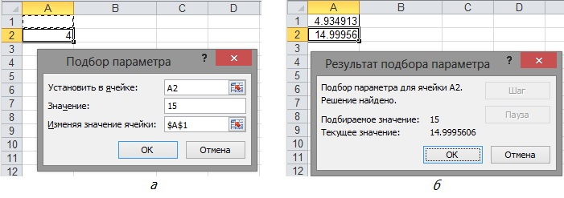
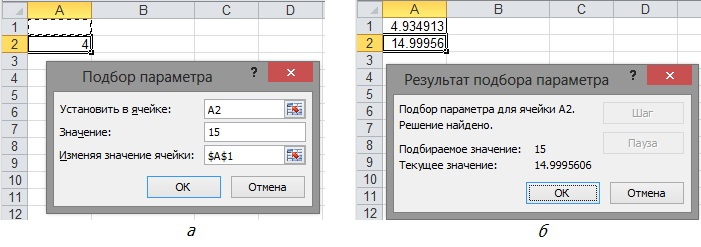

Вправа 6.3. Розв'язання квадратного рівняння
Виконуючи цю вправу, за допомогою засобу Підбір параметра ви розв'яжете рівняння У нашій задачі цільовою є функція а 15 – це значення, якому вона має дорівнювати.
- Створіть нову електронну книгу. Цільовою вважатимемо клітинку А2 і припустимо, що значення параметра зберігається у клітинці А1. Уведіть у клітинку А2 формулу =4*COS(A1)A2+3*A1.
- Виконайте команду Дані
 Робота за даними Підбір параметра, заповніть поля у вікні Підбір параметра (рис. 6.13, а) і клацніть ОК. У результаті у клітинці А1 (рис. 6.13, б) буде виведено значення змінної х, за якого функція набуває значення 15. Як видно з рис. 6.13, б, знайдене вами значення є наближеним, оскільки отримано число 14,99956, а не 15.

Робота за даними Підбір параметра, заповніть поля у вікні Підбір параметра (рис. 6.13, а) і клацніть ОК. У результаті у клітинці А1 (рис. 6.13, б) буде виведено значення змінної х, за якого функція набуває значення 15. Як видно з рис. 6.13, б, знайдене вами значення є наближеним, оскільки отримано число 14,99956, а не 15.

Рис. 6.13. Підбір параметра: a – заповнення вікна Підбір параметра; б – результати обчислень - Збережіть електронну книгу у файлі Вправа_6_3.xlsx.
- Самостійно створіть таблицю значень функції на інтервалі [0; 6] з кроком 0,5 та побудуйте за допомогою майстра діаграм графік цієї функції (рис. 6.14).
Щоб отримати згладжену лінію графіка, під час побудови діаграми необхідно вибрати нестандартний тип діаграми Гладкі графіки.
Перевірте правильність підбору параметра, визначивши за графіком, коли приблизно значення цільової функції дорівнює 15.

Рис. 6.14. Побудова графіка цільової функції